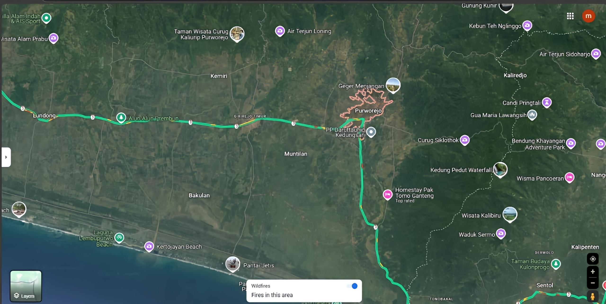

Sejarah
Purworejo memiliki sejarah yang kaya, berawal dari sebuah kadipaten bernama Kadipaten Semawung pada abad ke-17. Nama Purworejo sendiri mulai digunakan pada tahun 1831, ketika Belanda mendirikan Kabupaten Purworejo.
Kota ini memiliki peran penting dalam perjuangan kemerdekaan Indonesia, dengan banyak tokoh pejuang yang berasal dari daerah ini. Salah satu yang terkenal adalah Jenderal Sudirman, Panglima Besar TNI pertama yang lahir di Purworejo.
Geografi

Purworejo terletak di bagian selatan Provinsi Jawa Tengah, berbatasan langsung dengan Provinsi Daerah Istimewa Yogyakarta di sebelah timur. Wilayahnya terdiri dari dataran rendah di bagian selatan dan perbukitan di bagian utara.
Kabupaten ini memiliki luas wilayah sekitar 1.034,82 km² dengan topografi yang beragam, mulai dari pantai hingga pegunungan. Purworejo memiliki iklim tropis dengan dua musim: kemarau dan penghujan.
Wisata
Purworejo menyimpan berbagai destinasi wisata menarik yang menggabungkan keindahan alam dan warisan budaya.
Pantai Jatimalang
Pantai Jatimalang merupakan salah satu pantai terindah di Purworejo. Pantai ini terkenal dengan pasir putihnya yang lembut dan pemandangan matahari terbenam yang memukau.
Museum Tosan Aji
Museum Tosan Aji adalah tempat yang menyimpan berbagai koleksi senjata tradisional khas Jawa, seperti keris dan tombak. Museum ini memiliki nilai sejarah dan budaya yang tinggi, memamerkan warisan leluhur melalui senjata yang memiliki nilai filosofi mendalam. Pengunjung dapat belajar mengenai sejarah dan makna simbolik dari setiap senjata yang dipajang.
Kuliner Khas Purworejo
Purworejo memiliki beragam kuliner khas yang patut dicoba, seperti Gebleg, Kue Lompong, dan Clorot.
Tradisi Purworejo
Beberapa tradisi unik di Purworejo antara lain upacara Suro Bagghe dan Festival Bogowonto.
Kesenian Purworejo
Purworejo kaya akan kesenian tradisional seperti Tari Dolalak dan Kenthongan.